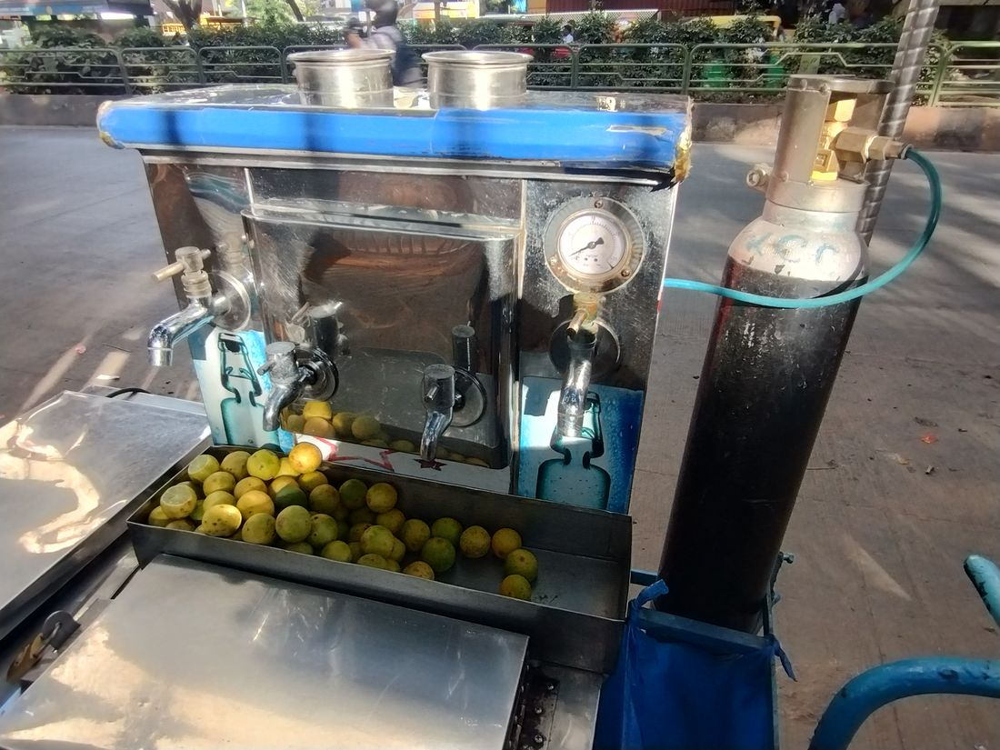

Functions
The predefined-process box from Chapter 1's flowcharts finally gets its C++ form.
Declarations and definitions, prototypes, pass by value versus
pass by reference, the scope and lifetime of variables — including
the static locals that remember — and how whole arrays travel into
functions.
Programs made of named pieces

6.1Definitions, calls, and the two kinds of parameter
In C++ all subprograms are functions. A function definition has
four parts: the return data type, the name, any parameters within
( ), and the body in { }:
void FindMax(int x, int y) { // x, y: FORMAL parameters int maxnum; maxnum = (x >= y) ? x : y; cout << "The maximum of the 2 numbers is " << maxnum << endl; } // in main(): int firstNum = 5, secNum = 8; FindMax(firstNum, secNum); // firstNum, secNum: ACTUAL parameters
The names in the function header are formal parameters; the values or variables placed in the call are actual parameters.

x and y is the sane version of this
joke — a small, general tool with clearly named inputs, not a monument built for
one call.
Comic: xkcd 974 “The General Problem” by Randall Munroe ·
CC BY-NC 2.5
Functions break large computing tasks into smaller ones, and enable people to build on what others have done instead of starting over from scratch.
6.2Prototypes — promise now, define later
A function prototype declares to the compiler that you intend to
use a function later: int maximum(int, int, int); (parameter names
optional). Calling a function before either its prototype or its definition is a
compile-time error. Example 7.3.2 puts the prototype above
main, the call inside it, and the definition below — the standard
layout you will use in Exercise 2.
If I have seen further it is by standing on ye sholders of Giants.
6.3Pass by value — the function gets a copy
When a variable is an actual parameter, the called function receives a
copy of its value. Changes to the copy never affect the caller's
variable. To hand a result back, use return expression; (or the bare
return; in a void function) — and the value's type must match the
function's declared return type.
squareByValue in 6.6 does exactly this to a number.
Photo: “Mr. M. Siddiq at Photostat Machine” (1954), U.S. National Archives, public domain ·
Wikimedia Commons (cropped)
6.4Scope: global vs local
Scope is where a declared name may be used. Declared outside every
function → global scope, accessible throughout the program.
Declared inside a function → local scope, that function only.
Example 6.3.1 is the classic trace: a global x changed inside
valfun() stays changed for main (x = 40), while each
function's local y is its own — main's y is still 20.
6.5Storage classes — how long a variable lives
A variable's lifetime is its storage duration (storage class):
auto, static, extern, and
register. Locals may be auto (the default), static, or register.
void testauto() { int num = 0; cout << num; num++; } // three calls print: 0 0 0 — created and destroyed every call void teststatic() { static int num = 0; cout << num; num++; } // three calls print: 0 1 2 — created ONCE, remembered for the // life of the program
auto no longer names a storage class — it now asks the compiler to work out a variable's type, as in auto x = 3.5;. And register stopped being a storage class specifier in C++17: the word is still reserved, but it no longer does anything.
Source: cppreference — Storage class specifiers.
- A static local's initialization happens only once; with no explicit initializer, statics are set to zero. Example 6.4.4's
static int sum = 100;accumulates: 101, 103, 106, 110… registerasks for storage in the CPU's internal registers; same duration as auto.externnames a global that is defined in another file, so several files can share it.
// years earlier: Power Peg's own share-counting check had been moved // EARLIER in the sequence, and never retested after the move if (repurposedFlag == "yes") { runNewRLPCode(order); // the 7 correctly-updated servers ran this } // this branch was meant to be deleted, but the deployment never removed it: else { runPowerPegCode(order); // dead code — unused, but still callable }
One of eight production servers never received the new code. On that single server the same repurposed flag activated the dormant Power Peg branch instead — code whose own running-total logic had quietly stopped working years earlier. For 45 minutes it fired uncontrolled buy and sell orders into the market: 4 million executions across 154 stocks, 397 million shares, a $460 million loss. Read the SEC's order against Knight Capital for the full account. In this course: code that is merely unreachable today is still callable — deleting it is safer than trusting a flag to keep it switched off forever.
6.6Pass by reference — the & that changes the caller
Follow the parameter's type with an ampersand and the callee can access — and modify — the caller's data directly:
int squareByValue(int a) { return a *= a; // squares a COPY — caller's x unchanged } void squareByReference(int &cRef) { cRef *= cRef; // squares the caller's own variable } // x = 2 → still 2 after squareByValue(x) (which returned 4) // z = 4 → becomes 16 after squareByReference(z)
Choose by-value when the function only needs to read; choose by-reference
when its job is to change its arguments — like swap, or a
function that must hand back more than one result.
Data abstractions provide the same benefits as procedures, but for data.
6.7Passing arrays to functions
Pass an array by its name, without brackets:
modifyArray(hourlyTemperature, size). The receiving parameter is
declared as int b[] — the size is not required between the
brackets, which is exactly why the element count travels as its own parameter.
int linearSearch(int array[], int key, int sizeofArray) { for (int n = 0; n < sizeofArray; n++) if (array[n] == key) return n; // found: its position return -1; // a sentinel: no valid index is −1 }
(low + high) / 2 overflows int once an array holds about a billion elements.
Source: Joshua Bloch, Google Research blog (2006).
sizeofArray buys linearSearch: the
loop doesn't care how big the array is, only how far to go.
Photo: “Glasabfüllung” by Wortmagier ·
Wikimedia Commons ·
CC BY-SA 4.0 (resized)
What I cannot create, I do not understand.
Chapter 6 quiz
26 questions — definitions, traces of scope and static, and the two passing styles.
Programming exercises
From your first void function to linear search with an array parameter — the chapter's examples, runnable and auto-checked.
Group discussion: the great refactor
Teams of 3–4 · one class period to prepare · a 5-minute before/after presentation. Counts toward the class-activities 10%.
Every piece of knowledge must have a single, unambiguous, authoritative representation within a system.
The task
Take one long, working, function-free program — your team's Chapter 4 survey machine or Chapter 5 gradebook is perfect — and refactor it into functions. The deliverable is an API design the team can defend: a list of function prototypes where every parameter is deliberately by-value, by-reference, or an array — with one sentence of justification each.
Constraints that force Chapter 6 thinking
- main() shrinks to a readable sequence of calls — no loose loops left in it.
- At least one function returns a value, one uses a reference out-parameter, and one takes an array plus its size.
- No global variables — everything travels through parameters. (If the team keeps one, they must defend it against the scope section of this chapter.)
Roles
| Role | Responsibility |
|---|---|
| API designer | owns the list of prototypes and the by-value / by-reference decisions |
| Programmer | performs the refactor live in the Playground, function by function |
| Skeptic | hunts for hidden coupling: which function secretly needs another's local? |
| Presenter | shows before vs after and argues why the after is easier to test and reuse |
Further reading
learncpp.com — Introduction to functions
Definitions, return values, and why “one function, one job” is the golden rule.
Tutoriallearncpp.com — Pass by reference
References in depth — including const references, the read-only middle ground.
Referencecppreference — Functions
The complete rules for declarations, definitions, parameters, and return.
Referencecppreference — Storage duration
auto, static, extern and friends — scope vs lifetime, precisely defined.
Tutoriallearncpp.com — Why (non-const) global variables are evil
The case against the pattern behind Example 6.3.1 — and behind the bug story in 6.5.
True storySEC — Order against Knight Capital Americas LLC (2013)
The official account of the Power Peg flag, the missed deployment, and the $460 million loss.
ReferenceWikipedia — Don't repeat yourself
The DRY principle: why duplicated logic — not just duplicated lines — is a function waiting to happen.
ClassicKernighan & Ritchie — The C Programming Language
Chapter 4, “Functions and Program Structure” — the book this chapter's opening quote is from, free to borrow.
TextbookMalik — C++ Programming, Chapters 6–7
User-defined functions I & II — value vs reference parameters, scope, and static.